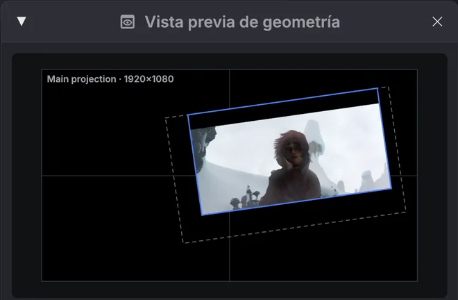
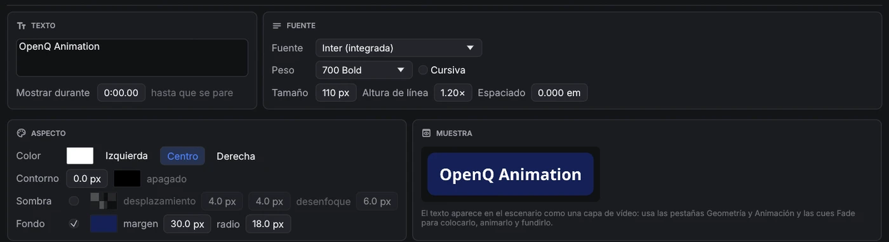
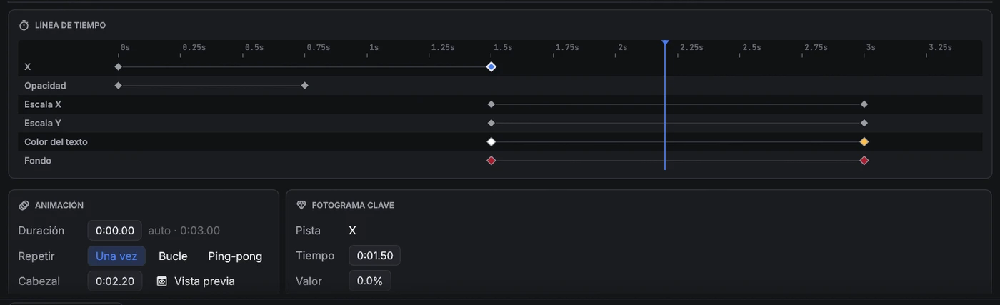
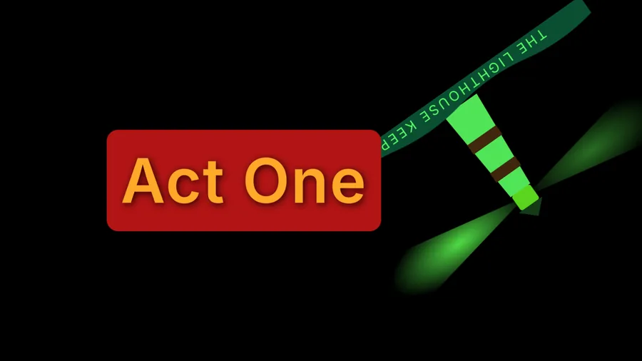
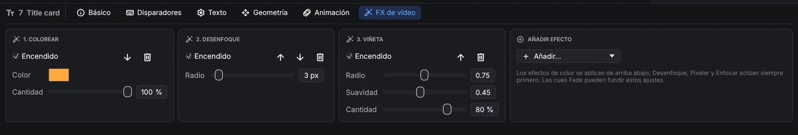
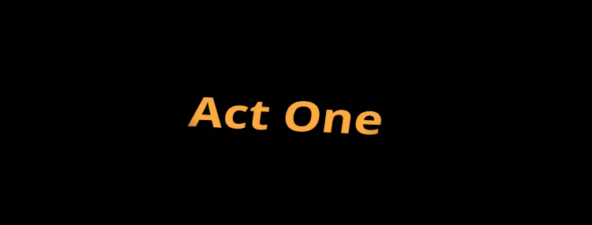
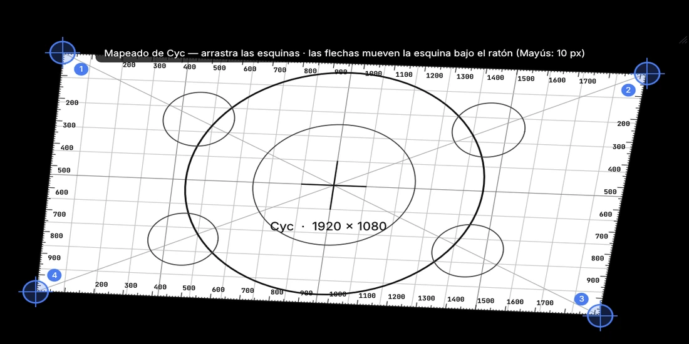

Vídeo y proyección
4.1Cues de vídeo y texto
Una cue de vídeo reproduce una película (todo lo que FFmpeg puede reproducir) o una imagen fija: PNG, JPEG, WebP, GIF, TIFF, BMP o SVG. Las imágenes se muestran durante un tiempo fijo o hasta que se paran. Un SVG se dibuja al tamaño al que se va a mostrar, incluida la mayor escala a la que llegan su geometría y su animación, así que logotipos y dibujos de línea se ven nítidos. Tiempo y bucles tiene recortes de inicio y fin, bucles y Mantener el último fotograma. La pestaña Audio tiene los faders principal y de salida de la banda sonora, e I/O su archivo y enrutado; la banda sonora suena por el mezclador como una cue de audio.
Geometría
- Escenario: a qué salida va la imagen. Sin ninguna, se usa el primer escenario.
- Ajustar: Ajustar muestra la imagen entera (con bandas), Rellenar cubre el escenario y recorta lo que sobra, Estirar lo llena exactamente y Tamaño nativo usa los píxeles propios del archivo.
- Capa (las más altas se dibujan encima) y opacidad.
- Posición, escala y rotación. La posición es un porcentaje del escenario:
X 25%mueve la imagen un cuarto del escenario hacia la derecha. Activa proporcional para escalar los dos ejes a la vez. - Recorte: quita un porcentaje por la izquierda, arriba, derecha y abajo. El resto de la imagen se queda donde estaba.

La vista previa de geometría (, o Vista previa en la pestaña Geometría) dibuja el escenario de la cue seleccionada con la imagen en su sitio, sin abrir una salida de proyector. En modo edición, arrastra en la vista previa para mover la imagen, usa la rueda para escalarla y haz doble clic para centrarla. Para una cue Fade que cambia la geometría, la vista previa muestra dónde termina el fundido, con la posición inicial como contorno discontinuo. Mientras una cue de película o de cámara suena, la vista previa muestra su imagen en directo.
Cues Cámara
Una cue Cámara muestra una cámara en directo (una webcam, una capturadora USB o HDMI) como capa en un escenario, con la misma pestaña Geometría que el vídeo: posición, escala, rotación, recorte, opacidad y capa, y las cues Fade pueden moverla y fundirla. En la pestaña Cámara elige el dispositivo y, si lo necesitas, el tamaño de captura; Espejo voltea la imagen como en un selfi. Mostrar durante 0 la mantiene hasta que se pare. El dispositivo y el tamaño se usan la próxima vez que arranque la cue.
Las cues de cámara también tienen la pestaña Animación y una máscara.
Cues Texto
Las cues de texto muestran texto escrito en un escenario: títulos, sobretítulos, subtítulos o una cuenta atrás para el equipo. Las pestañas Geometría y Animación funcionan como en el vídeo, y las cues Fade pueden mover y fundir el texto. Los cambios en la pestaña Texto aparecen al momento en una cue que se está mostrando.

| Ajuste | Qué hace |
|---|---|
| Fuente | Cualquier fuente instalada en el ordenador. Escribe en la lista para buscar. Inter (integrada) está siempre disponible. |
| Peso · Cursiva | De Thin (100) a Black (900). Los pesos que la fuente no incluye aparecen en gris y se usa el instalado más cercano. |
| Tamaño | Tamaño de letra en píxeles del escenario: 96 px en un escenario de 1080 líneas es una décima parte de su altura. |
| Altura de línea · Espaciado | Distancia entre líneas (como múltiplo del tamaño) y espacio extra entre letras en em. |
| Color · alineación | Color y transparencia del texto; líneas a la izquierda, centradas o a la derecha. |
| Contorno | Un borde alrededor de cada letra, en píxeles del escenario, con su propio color. Mantiene el texto legible sobre vídeo cargado. |
| Sombra | Una sombra suave: color, desplazamiento a la derecha y abajo, y desenfoque. |
| Fondo | Una caja detrás del texto: color y transparencia, margen (espacio alrededor del texto, en píxeles del escenario) y radio para esquinas redondeadas. Buena para subtítulos y sobretítulos sobre vídeo. |
| Mostrar durante | Tiempo en pantalla; 0 la muestra hasta que se pare. |
El texto se compone correctamente en cualquier idioma. Pares como AV llevan kerning, se usan ligaduras y la escritura de derecha a izquierda funciona. Los caracteres que no tiene la fuente elegida, como emoji o chino, se dibujan con otra fuente instalada. El texto se renderiza al doble de la resolución del escenario, así que se ve nítido al ampliarlo y suave al reducirlo.
El texto se prepara en segundo plano antes de su GO, y otra vez después de cambiar su aspecto, así que arrancar o editar una cue de texto nunca retiene el espectáculo. Los cambios de color, movimientos y animaciones no necesitan preparación. Tras cambiar el texto, la fuente o el tamaño de una cue que se está mostrando, la versión nueva sustituye a la antigua un momento después.
El archivo del espectáculo guarda el nombre de la fuente, no la fuente en sí. Instala las mismas fuentes en cada ordenador que reproduzca el espectáculo. Si falta una fuente, la pestaña Texto indica no instalada aquí y se usa una fuente de sustitución.
Máscaras
Una máscara es una imagen que oculta partes de una capa: el blanco muestra, el negro oculta y los grises muestran en parte (lo transparente también oculta). En la pestaña Geometría de una cue de vídeo, texto o cámara, haz clic en Examinar… en la tarjeta Máscara y elige una imagen (PNG, JPEG, SVG…). La máscara se estira sobre la capa y se mueve, escala, gira y recorta con ella. Invertir le da la vuelta: el negro muestra y el blanco oculta. La capa queda oculta el momento que tarda en cargar su máscara; un archivo de máscara que no se puede leer no oculta nada (y el registro de errores dice por qué).
Animación
La pestaña Animación de las cues de vídeo, texto y cámara mueve, escala, gira, recorta, funde y cambia el color de la capa con fotogramas clave. La animación empieza cuando arranca la cue y sigue el reloj de la propia cue: pausar la cue la pausa.

- Añadir pista elige una propiedad. Su primer fotograma clave queda en el cabezal y no cambia nada, así que después puedes poner los valores que quieras.
- Línea de tiempo: haz clic en la regla o en una fila para mover el cabezal. Haz clic en un fotograma clave para seleccionarlo y arrástralo de lado para cambiar su tiempo. Haz doble clic en una fila para añadir un fotograma clave ahí.
- Tarjeta Fotograma clave: el tiempo y el valor de la clave seleccionada, y Después, que indica cómo pasa el valor a la clave siguiente: Mantener (se queda y luego salta), Lineal, Entrada suave, Salida suave, Entrada y salida suaves o una Curva personalizada (una Bézier cúbica, escrita como en CSS: x1 y1 x2 y2). Fotograma clave en el cabezal añade una clave con el valor que tiene la pista en el cabezal.
- Duración es una pasada de la animación; 0 significa que termina en el último fotograma clave. Una línea ámbar discontinua la marca en la línea de tiempo. Repetir: Una vez mantiene los últimos valores, Bucle vuelve a empezar, Ping-pong va hacia delante y luego hacia atrás.
- Activa Vista previa para ver la capa en la vista previa de geometría tal como está en el cabezal. Un contorno discontinuo muestra la posición propia de la cue.
| Propiedad | Valor | Cómo se combina con la cue |
|---|---|---|
| X · Y | % del escenario | Se suma a la posición de la pestaña Geometría. |
| Escala X · Escala Y | % | Multiplica la escala de la pestaña Geometría: 200% la duplica. |
| Rotación | grados | Se suma a la rotación. 360° es una vuelta completa. |
| Recorte izquierda · arriba · derecha · abajo | % de la imagen | Se suma al recorte. Anímalo para cortinillas y revelados. |
| Opacidad | % | Multiplica la opacidad de la cue. |
| Tinte | color | Multiplica los colores de la imagen. El blanco la deja igual. Un tinte solo puede oscurecer o recolorear: el blanco se convierte en el color del tinte y el negro sigue negro. |
| Color del texto · Color del contorno · Color de la sombra · Fondo | color (solo texto) | Sustituyen los colores de la pestaña Texto. |
Como los valores son relativos, una cue Fade o un cambio en la pestaña Geometría siguen moviendo o fundiendo toda la capa animada. Por ejemplo, una animación puede hacer que un logotipo suba y baje mientras una cue Fade lo desliza por el escenario.

Las animaciones se calculan en directo mientras se dibuja el escenario: unas pocas operaciones por capa, con el movimiento, la escala y el color a cargo de la tarjeta gráfica. No se renderiza ni decodifica nada por adelantado, así que animar una capa cuesta lo mismo que mostrarla quieta. Los cambios que hagas aparecen al momento, incluso en una cue en marcha, a cualquier resolución de escenario. El desenfoque y los cambios de color son efectos de vídeo, que una cue Fade puede animar.
FX de vídeo

Las cues de vídeo, cámara y texto tienen una pestaña FX de vídeo, una pila de efectos sobre la imagen. Añádelos, reordénalos y actívalos como los efectos de audio. Los dibuja la tarjeta gráfica mientras dibuja el escenario, así que casi no cuestan nada y cambian en directo, incluso en una cue en marcha.

| Efecto | Ajustes |
|---|---|
| Controles de color | Brillo, contraste, saturación (0 = blanco y negro). |
| Exposición | Exposición en pasos, gamma. |
| Matiz | Gira todos los colores por la rueda de color. |
| Colorear | Monocromo en el color que elijas. |
| Sepia · Invertir | Cantidad. |
| Posterizar | Número de niveles por color. |
| Umbral | Corte a blanco y negro en un nivel de brillo. |
| Viñeta | Oscurece los bordes: radio, suavidad, cantidad. |
| Desenfoque · Pixelar · Enfocar | Radio o tamaño de bloque en los píxeles propios de la imagen. |
| Chroma key | Hace transparente un color (croma verde o azul en una cue de cámara): color clave, umbral, suavidad y derrame, que quita el reflejo verde de los bordes que quedan. |
Los efectos de color actúan de arriba abajo; Desenfoque, Pixelar y Enfocar cambian cómo se lee la imagen, así que siempre actúan primero. Los efectos se aplican después del tinte y la opacidad de la capa, y funcionan con todos los modos de fusión.
4.2Escenarios y proyección
Un escenario (stage) es una salida de vídeo, como un proyector o una pantalla. Añade escenarios en . Cada uno tiene un nombre y un tamaño de lienzo en píxeles.
Enviar un escenario a una pantalla
En , o con el desplegable Salida de Ajustes → Escenarios de vídeo, elige Ventana o una de las pantallas conectadas. Un escenario asignado a una pantalla se abre a pantalla completa en ella, y vuelve a abrirse allí al cargar el espectáculo. Si una pantalla no aparece, usa Actualizar pantallas. En una ventana de escenario, haz doble clic o pulsa F11 para alternar la pantalla completa.
Una salida abierta muestra negro cuando no suena nada en ella. Marca Cerrar cuando no suena nada para que se cierre un momento después de que acabe su última cue; la siguiente cue en ella la vuelve a abrir, en la misma pantalla.
Decodificar las películas en la tarjeta gráfica (arriba en Ajustes → Escenarios de vídeo, activado de serie) deja que el decodificador de vídeo de la tarjeta gráfica reproduzca H.264, HEVC y los demás formatos que admite, y así el procesador queda libre para películas grandes. Los archivos que no admite los decodifica el procesador como antes. Desactívalo si una película sale con colores erróneos o no se reproduce; se aplica a las películas que empiecen a partir de entonces.
Mapeado

Editar mapeado muestra un patrón de ajuste en el escenario: un lienzo blanco con una cuadrícula cuadrada, reglas de píxeles en cada borde, círculos, diagonales y una cruz central, todo dibujado a través del mapping, además de cuatro esquinas numeradas. Arrastra las esquinas para encajar la imagen en la pantalla (corrección de trapecio), o pasa el ratón por una esquina y muévela con las flechas: un píxel cada vez, o diez con Mayús. Restablecer mapeado devuelve las esquinas a su sitio.
Varios proyectores en una superficie
Para una imagen más ancha que un proyector (un ciclorama, una pantalla ancha), crea un escenario del tamaño de toda la superficie y pon las cues en él, y luego un escenario por proyector que muestre una parte. En la sección Extensión y fusión de bordes de cada proyector (Ajustes → Escenarios de vídeo), pon Muestra en Parte de la superficie, la Parte que muestra y los anchos de Fusión donde se solapa con sus vecinos: la imagen se desvanece a lo largo del solape para que los dos proyectores sumen un brillo uniforme. Gamma da forma al fundido (súbela si el solape se ve demasiado brillante).
- Dividir: en el escenario superficie, fija cuántas salidas, cuánto se solapan, lado a lado o una sobre otra, y haz clic en Crear salidas: se ajustan las partes y zonas de fusión de los escenarios que la muestran, y se añaden escenarios si faltan.
- Elevar el negro: los proyectores nunca dan negro puro, así que donde dos se solapan el negro se ve gris. Sube Elevar el negro en cada proyector hasta que el negro fuera del solape iguale al de dentro.
- La vista previa de geometría de una superficie muestra la parte de cada proyector, con las zonas de fusión sombreadas.
Máscaras de escenario
Un escenario también puede tener una máscara, en la sección Máscara de sus ajustes: se estira sobre toda la salida, después del mapeado, y oculta lo que haya. Úsala para que la luz de un proyector no caiga sobre escenografía, caras de actores o el borde de una pantalla.